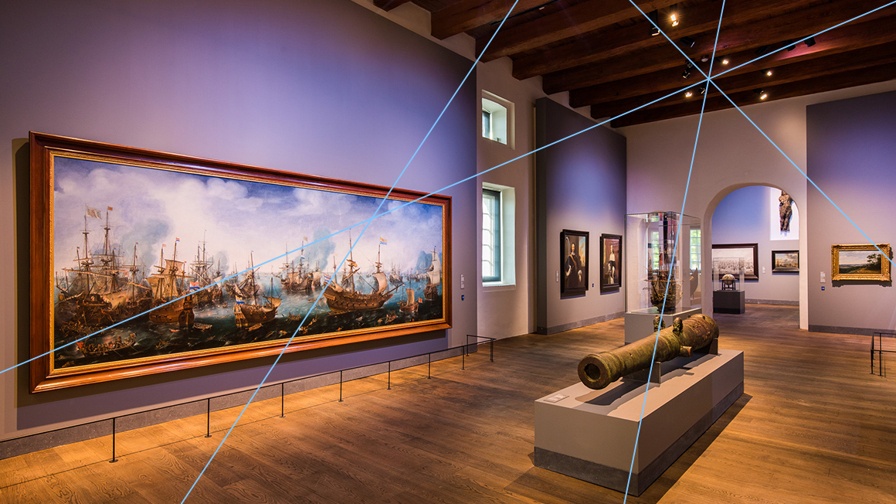

Museum van binnen
Hier zie je een prachtige foto van de Scheepsvaartmuseum van binnenuit!

Zeeslag bij Gibraltar
op deze foto zie je de grootste schilderij van de collectie van het Scheepsvaartmuseum namelijk de Zeeslag bij Gibraltar!

Prachtig schilderij
Hier zie je nog een prachtig schilderij van het collectie in de Scheepsvaartmuseum

Willem van de velde en de zoon
Dit is één van de schilderijen van Willem van de velde en de zoon!